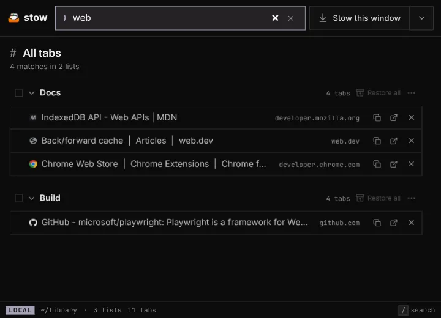
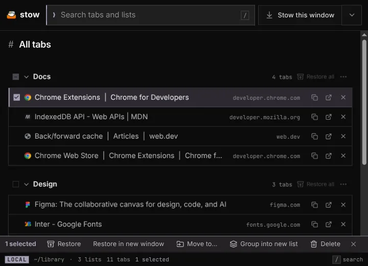
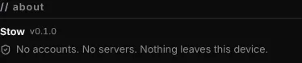

Stow
Save the whole window.
Capture every eligible tab as one list and close the clutter. Pinned tabs stay exactly where you put them.
AltShiftS save window

A local-first tab manager
Stow saves your open tabs as searchable lists, so you can clear the clutter and return to what matters whenever you need it.
No account No cloud No tracking
Chrome 120+ Firefox 140+ from source Works offline after install

How it works
Save the window. Find the page. Put it back. Stow stays out of the way in between.
Stow
Capture every eligible tab as one list and close the clutter. Pinned tabs stay exactly where you put them.
AltShiftS save window
Find
Search titles, URLs, domains, and list names. The index lives in your browser, so results arrive as you type.
Ctrl/CmdK search from anywhere

Restore
Restore one tab, a selection, or an entire list. Send it to the current window or a new one, and remove it from Stow afterward if you like.
AltShiftL open library

Features
A small set of tools for the whole life of a tab: capture it, organize it, search it, and put it back.
Capture
One shortcut saves every eligible tab as a list and closes the clutter. Pinned tabs stay open.
Search
Search titles, URLs, domains, and list names. No account, no server round trip, no waiting.
Organize
Shape a list around a project, then keep it out of the way. Your structure survives restarts and updates.
Restore
Bring back one page, selected tabs, or a complete list. Choose the current window or a fresh one.
Import / export
Import an existing shelf, or export everything as a JSON backup whenever you want a copy you own.
Keyboard
The library is built to be driven from the keyboard, from the first capture to the final restore.
Privacy
Stow is designed to keep your browsing library local to your browser profile. It does not need an account or a Stow-hosted server to save and restore your tabs.
No account. No server. No network requests.
| Data | Where it is stored | Sent to Stow servers |
|---|---|---|
| Saved tabs and lists | Browser extension storage (IndexedDB) | No |
| Preferences | Browser-local storage | No |
| Optional backup files | A download location you choose | No |
| Favicons | Your browser's local favicon cache | No |
Uninstalling Stow removes its library. Export a JSON backup first if you want a copy.

Install
Download the packaged build for Chrome, or build the Firefox package from source. Both keep the same library local to that browser.
The packaged build is the fastest path. It works in Chrome and other Chromium browsers that can load unpacked extensions.
Grab stow-0.1.0-chrome.zip and unzip it.
Go to chrome://extensions and turn on Developer mode.
Choose Load unpacked and select the unzipped folder.
Press AltShiftS to stow your first set of tabs.
Firefox isn't in the add-on store yet. Build the MV3 package, then load it as a temporary add-on for Firefox 140 or newer.
pnpm install
pnpm zip:firefoxThe build lands in .output/firefox-mv3.
Go to about:debugging#/runtime/this-firefox.
Choose Load Temporary Add-on and open the manifest.
Both builds store everything locally. Nothing syncs between browsers—or anywhere else.